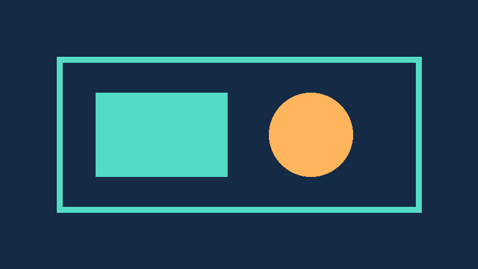

Laboratori de mitjans
Exemple amb formes i un to sintètic. Abaixa el volum abans de reproduir.
Imatge

Àudio
Transcripció: to continu de 440 Hz durant tres segons; no hi ha veu.
Vídeo
Descripció: es mostren un rectangle verd i un cercle taronja durant tres segons mentre sona un to continu.
Per veure els subtítols, serveix aquesta pàgina per HTTP i activa «Català». Com obrir el model amb un servidor local.